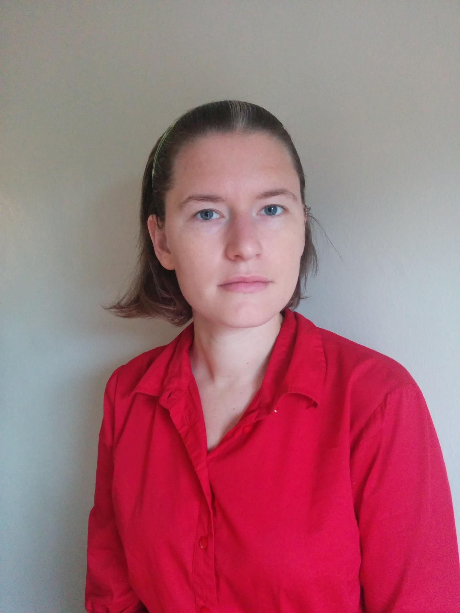

<!-- <h1>Emma Tosch</h1>
<h4>She/her<br>
Assistant Professor<br>
University of Vermont<br>
Office: E456 Innovation Hall<br>
E-mail: etosch at uvm dot edu<br>
[ <a href="cv.pdf">CV</a> ]
</h4>
<h4>[ <a href="#teaching">Teaching</a> |
<a href="#students">Students</a> |
<a href="#publications">Publications</a> |
<a href="#press">Press</a> ]</h4>
<div style="background-color:darkslategray; color: white; padding: 10px 10px 10px 10px; border-radius: 5px; width:80%; overflow:auto;"> <b>I am currently looking for PhD students!</b> Feel free to reach out for a chat if you think we might work well together. If you'd like to learn more about what I do, and my advising style, consider checking out:
Note: I technically do not start professoring until January 2021, so all readers should consider this website under construction until then.
</div>
Research Interests
The research questions that motivate me relate to supporting sound experimental methodologies within complex software systems. I use methods from domain-specific programming language design to build languages and tools for data scientists and social scientists.
- UVM CS 253: Reinforcement Learning, Spring 2021
"Reinforcement Learning” (RL) is a paradigm for training an autonomous agent to optimize its behavior over time in an environment that may change. While RL has gained attention in recent years for human-competitive game-playing agents (e.g., AlphaStar, DeepQ), variants of RL are also used in experimental design (e.g., contextual bandits) and medicine (e.g., dynamic treatment regimes).
In this course, we will cover the fundamentals of reinforcement learning training algorithms from a perspective that emphasizes experimental design and evaluation of learned policies (i.e., the functions that map from environmental state to an action taken). Special topics may include (but not be limited to) safe RL, options, and deep RL.
Students will be evaluated on their mastery of core technical skills and ability to synthesize higher level concepts. Evaluation will be via three methods: (1) frequent short quizzes to assess lower-level technical skills, especially mathematical foundations, (2) a small number of medium-sized programming assignments to implement RL learning algorithms and to explore dynamics between agent and environment, and (3) a semester-long project that will have well-defined milestones.
 | Krystal is working on participatory survey design, combining surveys-as-software with differential privacy to build trust between data collectors and the communities their work impacts. |
</td>
<td align="right" valign="top">

</td>
</tr>
</table>
<i>Layout copied shamelessly from <a href="http://uvm.edu/~jnear">Joe Near</a>, in an attempt at consistency of style.</i> --> -->